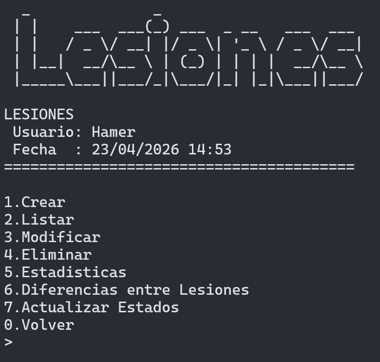
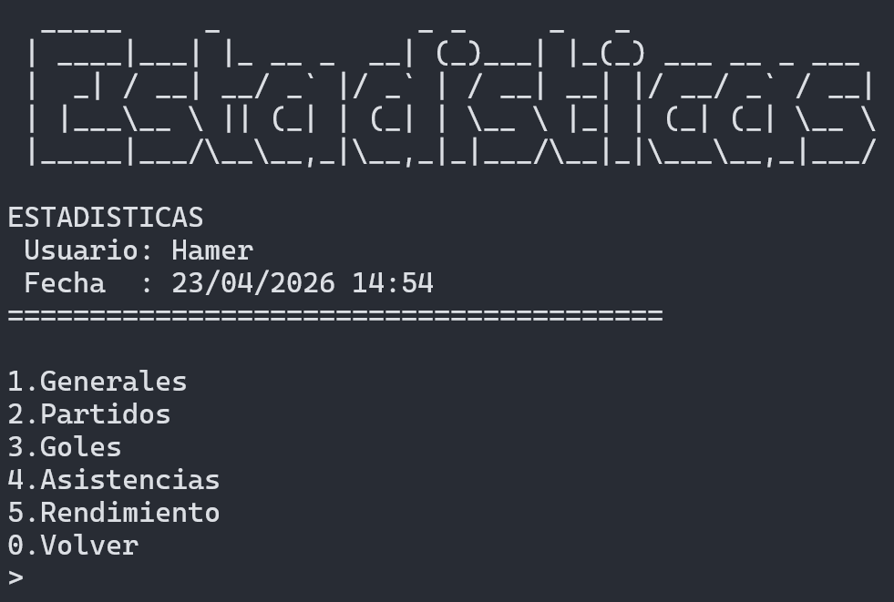
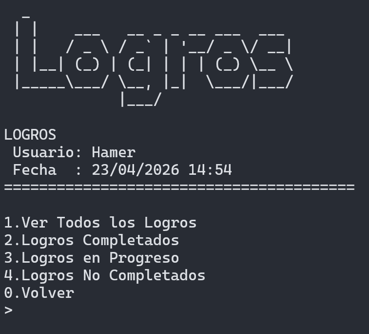
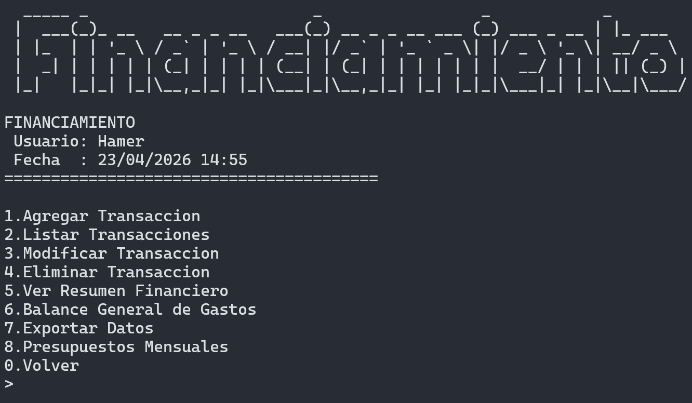
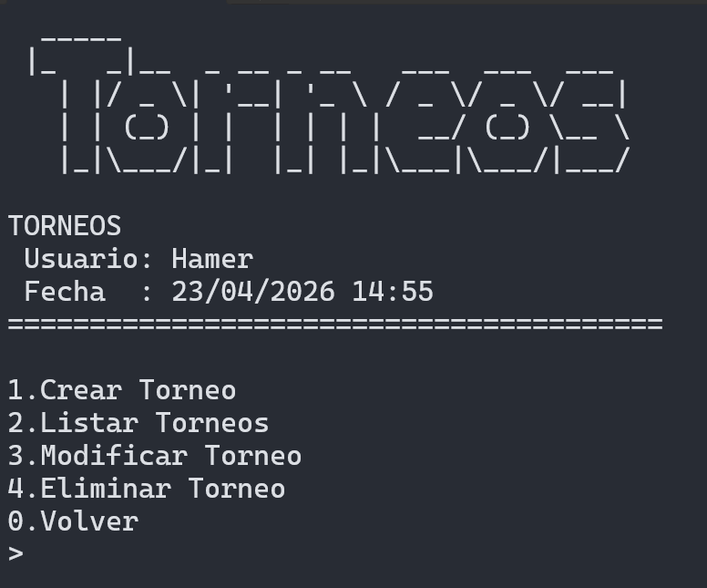
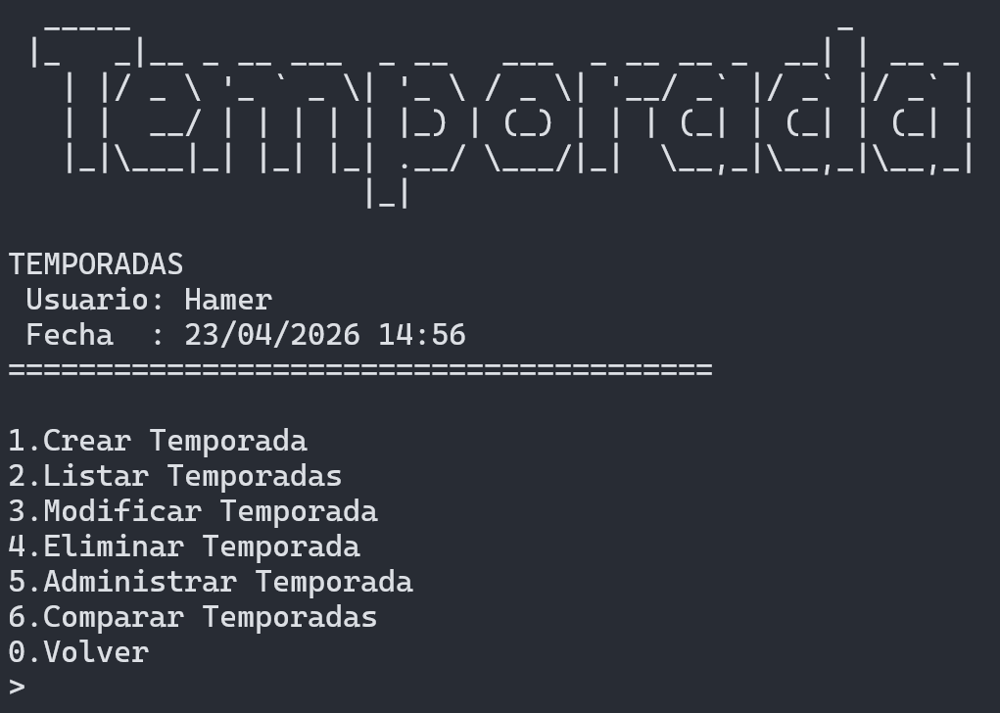
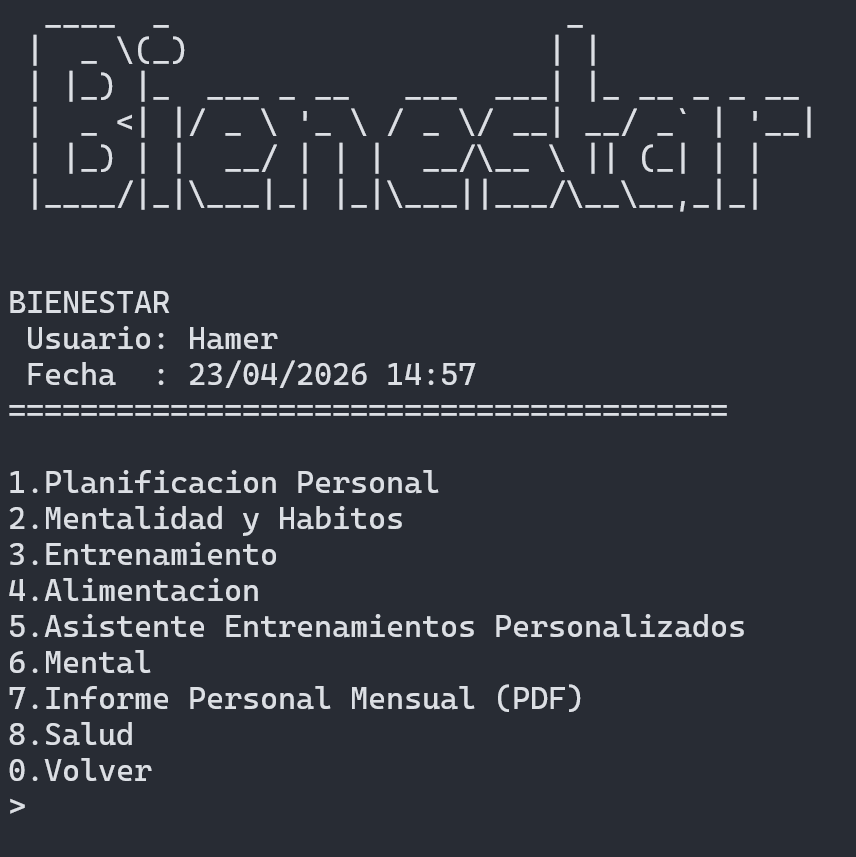
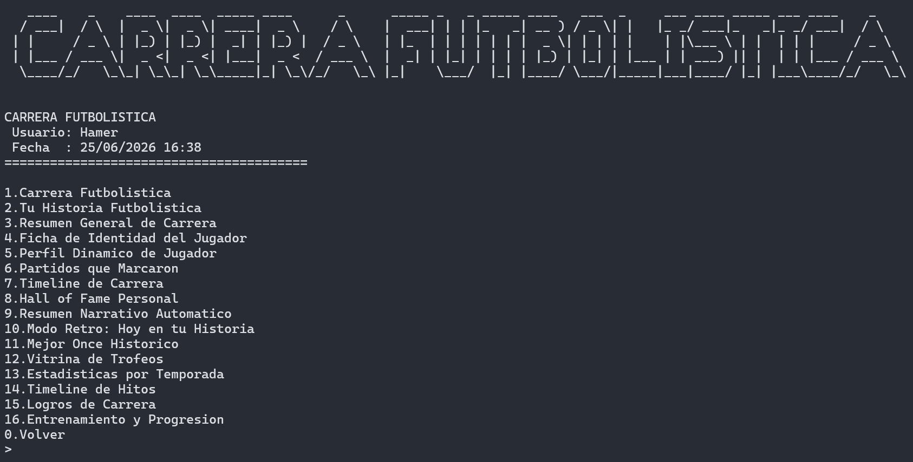
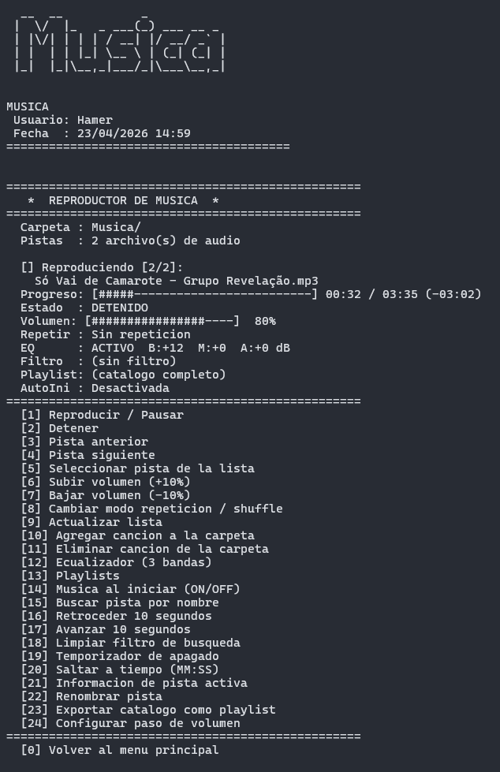
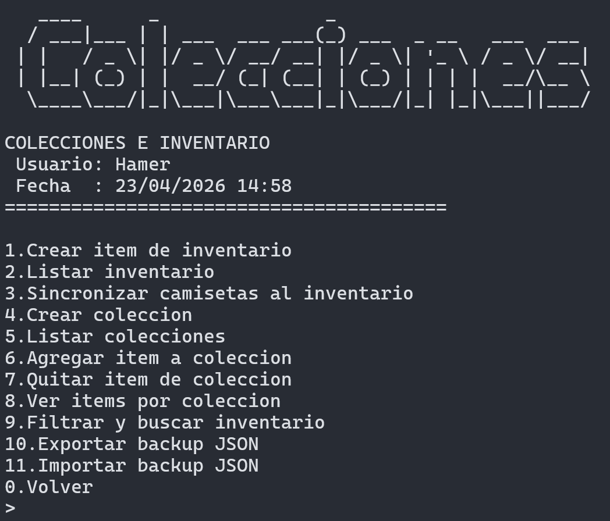

Bienvenido a MiFutbolC, el sistema completo de
gestión y análisis de datos para fútbol desarrollado en lenguaje C.
Novedades recientes (v4.3)
Carrera Futbolística ampliada: ficha de
identidad, perfil dinámico, partidos que marcaron, timeline,
Hall of Fame, resumen narrativo y Modo Retro.
Partidos más completos: nuevos modos
(Amistoso, Torneo, Entrenamiento) y nuevas métricas de contexto
(estado de cancha, marcador global, formato F5/F7/F8/F11,
tarjeta, goles en contra, dolor físico, temperatura,
arbitraje score, tags, lo mejor/qué mejorar).
Canchas con exportación dedicada: exportación
de información de canchas en TXT, CSV, JSON, HTML y PDF.
Estadísticas de rendimiento extendidas:
análisis por intensidad, dolor físico, arbitraje y temperatura.
2. Listar: consultar lesiones registradas.
3. Modificar: editar lesión existente.
4. Eliminar: eliminar lesión.
5. Estadísticas: ver analítica de lesiones.
6. Diferencias entre Lesiones: comparar
tipos/incidencias.
7. Actualizar Estados: actualizar evolución de
recuperación.
Registrar una Lesión
Selecciona "7" en el menú principal
Elige "1" para registrar una nueva lesión
Ingresa el nombre del jugador
Selecciona el tipo de lesión (Muscular, Articular, Ósea, etc.)
Ingresa una descripción detallada
Especifica la fecha de la lesión
Indica la duración estimada de recuperación
Selecciona la camiseta asociada (opcional)
Asocia con un partido si aplica
Listar Lesiones
Selecciona "7" en el menú principal
Elige "2" para listar todas las lesiones
Se mostrarán con detalles completos, estado y fecha con día de
semana
Ejemplo: Fecha: Domingo 01/02/2026 21:40
Editar una Lesión
Selecciona "7" en el menú principal
Elige "3" para editar una lesión
Ingresa el ID de la lesión a editar
Modifica los datos según sea necesario
Eliminar una Lesión
Selecciona "7" en el menú principal
Elige "4" para eliminar una lesión
Ingresa el ID de la lesión a eliminar
Confirma la eliminación
Estadísticas y Herramientas de Lesiones
Selecciona "7" en el menú principal
Usa opciones adicionales del menú de lesiones:
"5" Estadísticas
"6" Diferencias entre lesiones
"7" Actualizar estados

Estadísticas
Selecciona "8" en el menú principal para acceder al menú
de estadísticas. Este menú ofrece una amplia variedad de análisis
estadísticos.
Qué puedes hacer en Estadísticas
1. Generales: ver métricas globales del
rendimiento.
2. Partidos: analizar indicadores centrados en
partidos.
3. Goles: evaluar producción goleadora.
4. Asistencias: medir contribución en
asistencias.
5. Rendimiento: revisar tendencias y promedios
de rendimiento.
Estadísticas Generales
Análisis completo del rendimiento de camisetas:
Camiseta con más goles
Camiseta con más asistencias
Camiseta con más partidos jugados
Camiseta con más goles + asistencias
Camiseta con mejor rendimiento general promedio
Camiseta con mejor estado de ánimo promedio
Camiseta con menos cansancio promedio
Camiseta con más victorias
Camiseta con más empates
Camiseta con más derrotas
Camiseta más sorteada
Estadísticas por Año y Mes
Estadísticas por Año: Análisis histórico
agrupado por año, mostrando partidos jugados, goles, asistencias
y promedios por camiseta
Estadísticas por Mes: Análisis histórico
agrupado por mes, mostrando estadísticas detalladas por camiseta
Estadísticas Avanzadas y Meta-Análisis
Análisis profundo del rendimiento:
Consistencia del Rendimiento: Análisis de
variabilidad, desviación estándar y coeficiente de variación
Partidos Atípicos (Outliers): Identificación de
partidos con rendimiento excepcionalmente alto o bajo
Dependencia del Contexto: Análisis de cómo el
rendimiento varía según clima, día de semana y resultado
Impacto Real del Cansancio: Correlación entre
cansancio y rendimiento, con resultados por nivel de cansancio
Impacto Real del Estado de Ánimo: Correlación
entre estado de ánimo y rendimiento, con análisis por niveles
Eficiencia: Goles por Partido vs Rendimiento:
Relación entre producción de goles y rendimiento general
Eficiencia: Asistencias vs Cansancio: Cómo el
cansancio afecta la capacidad de asistir
Rendimiento por Intensidad: Relación entre
exigencia del partido y rendimiento
Rendimiento por Dolor Físico: Impacto de
molestias físicas sobre rendimiento y contribución
Rendimiento por Arbitraje: Comportamiento del
rendimiento según calidad arbitral
Rendimiento por Temperatura: Correlación del
rendimiento con la temperatura registrada
Partidos Exigentes Bien Rendidos: Partidos
difíciles con buen rendimiento
Partidos Fáciles Mal Rendidos: Partidos fáciles
con bajo rendimiento
Análisis de Estados Físicos y Mentales
Rendimiento por Nivel de Cansancio: Bajo (1-3),
Medio (4-7), Alto (8-10)
Goles con Cansancio Alto vs Bajo: Comparación
usando el promedio como referencia
Partidos con Cansancio Alto: Total de partidos
con nivel mayor a 7
Caída de Rendimiento por Cansancio Acumulado:
Comparación entre partidos recientes y antiguos
Rendimiento por Estado de Ánimo: Bajo (1-3),
Medio (4-7), Alto (8-10)
Goles por Estado de Ánimo: Producción según
estado emocional
Asistencias por Estado de Ánimo: Análisis de
asistencias según ánimo
Estado de Ánimo Ideal para Jugar: Nivel que
produce el mejor rendimiento
Estadísticas por Clima y Día de la Semana
Rendimiento Promedio por Clima: Análisis según
condiciones climáticas
Goles por Clima: Total de goles en diferentes
climas
Asistencias por Clima: Asistencias según clima
Clima Mejor/Peor Rendimiento: Identificación de
condiciones óptimas
Mejor/Peor Día de la Semana: Día con mejor y
peor rendimiento
Goles Promedio por Día: Producción por día de
la semana
Asistencias Promedio por Día: Asistencias por
día
Rendimiento Promedio por Día: Rendimiento
general por día
Récords y Rankings
Sistema completo de récords históricos:
Récords Individuales: Máximo de goles y
asistencias en un partido
Combinaciones Óptimas: Mejor y peor combinación
cancha + camiseta
Temporadas: Mejor y peor temporada por
rendimiento promedio
Rendimiento Extremo: Partidos con mejor y peor
rendimiento general
Combinaciones: Partidos con mejor combinación
de goles + asistencias
Partidos Especiales: Sin goles, sin
asistencias, rachas goleadoras
Rachas: Mejor racha goleadora y peor racha (sin
goles)
Estadísticas de Lesiones
Análisis completo de lesiones:
Total de Lesiones: Número total de incidentes
médicos
Lesiones por Tipo: Clasificación por categorías
diagnósticas
Lesiones por Camiseta: Distribución por
jugador/camiseta
Lesiones por Mes: Análisis temporal mensual
Mes con Más Lesiones: Identificación del
período de mayor riesgo
Tiempo Promedio entre Lesiones: Cálculo de
intervalos
Rendimiento Antes/Después de Lesiones:
Comparación de métricas de producción

Logros
Selecciona "9" en el menú principal para acceder al
sistema de logros y badges. Los logros están organizados por
categorías y niveles de dificultad.
Logros Especiales: Hat-tricks, Poker de
asistencias, Rendimiento perfecto, Ánimo perfecto
Ver Todos los Logros
Selecciona "9" en el menú principal
Elige "1" para ver todos los logros
Se mostrarán todos los logros con su progreso actual
Ver Logros Completados
Selecciona "9" en el menú principal
Elige "2" para ver logros completados
Se mostrarán solo los logros que has alcanzado
Ver Logros en Progreso
Selecciona "9" en el menú principal
Elige "3" para ver logros en progreso
Se mostrarán los logros que estás cerca de completar
Ver Logros No Completados
Selecciona "9" en el menú principal
Elige "4" para ver logros no completados
Se mostrará el listado pendiente con su progreso

Gestión Financiera
Selecciona "10" en el menú principal para acceder al
módulo de gestión financiera del equipo.
Qué puedes hacer en Financiamiento
1. Agregar Transacción: registrar ingresos y
gastos.
2. Listar Transacciones: ver historial
financiero.
3. Modificar Transacción: editar movimientos.
4. Eliminar Transacción: borrar movimientos.
5. Ver Resumen Financiero: ver consolidado de
ingresos/gastos.
6. Balance General de Gastos: analizar gastos
por categoría.
7. Exportar Datos: exportar módulo financiero.
8. Presupuestos Mensuales: gestionar topes y
seguimiento mensual.
Agregar Transacción Financiera
Selecciona "10" en el menú principal
Elige "1" para agregar una nueva transacción
Selecciona el tipo:
Ingreso: Cuotas, sponsors, premios,
etc.
Gasto: Diversos tipos de gastos
Elige la categoría:
Transporte
Equipamiento
Cuotas
Torneos
Arbitraje
Canchas
Medicina
Otros
Ingresa la descripción detallada
Especifica el monto
Indica el item específico si aplica
Listar Transacciones
Selecciona "10" en el menú principal
Elige "2" para ver todas las transacciones financieras
Se mostrarán ordenadas por fecha y con día de semana en la fecha
Ejemplo: Fecha: Martes 06/05/2026
Modificar Transacción
Selecciona "10" en el menú principal
Elige "3" para modificar una transacción existente
Ingresa el ID de la transacción a modificar
Actualiza los datos necesarios
Eliminar Transacción
Selecciona "10" en el menú principal
Elige "4" para eliminar una transacción
Ingresa el ID de la transacción
Confirma la eliminación
Ver Resumen Financiero
Selecciona "10" en el menú principal
Elige "5" para ver un resumen completo
Se mostrará:
Total de ingresos
Total de gastos
Balance actual
Transacciones recientes
Ver Balance de Gastos
Selecciona "10" en el menú principal
Elige "6" para analizar el balance por categorías
Se mostrará el desglose de gastos por tipo
Exportar Datos Financieros
Selecciona "10" en el menú principal
Elige "7" para exportar las transacciones financieras
Selecciona el formato deseado (CSV, JSON, HTML, TXT)
Presupuestos Mensuales
Selecciona "10" en el menú principal
Elige "8" para abrir el menú de presupuestos mensuales
Configura límites y seguimiento por mes

Gestión de Torneos
Selecciona "11" en el menú principal para acceder al menú
de gestión de torneos.
Qué puedes hacer en Torneos
1. Crear Torneo: crear una nueva competencia.
2. Listar Torneos: consultar torneos cargados.
3. Modificar Torneo: ajustar configuración.
4. Eliminar Torneo: eliminar torneo existente.
Crear un Torneo
Selecciona "11" en el menú principal
Elige "1" para crear un nuevo torneo
Ingresa el nombre del torneo
Selecciona si tiene equipo fijo
Elige el tipo de torneo:
Ida y Vuelta
Solo Ida
Eliminación Directa
Grupos y Eliminación
Selecciona el formato:
Round Robin
Grupos con Final
Copa Simple
Eliminación Directa por Fases
Especifica la cantidad de equipos participantes
Listar Torneos
Selecciona "11" en el menú principal
Elige "2" para listar todos los torneos
Se mostrarán con su estado actual
Modificar un Torneo
Selecciona "11" en el menú principal
Elige "3" para modificar un torneo
Ingresa el ID del torneo a modificar
Actualiza la configuración del torneo
Eliminar un Torneo
Selecciona "11" en el menú principal
Elige "4" para eliminar un torneo
Ingresa el ID del torneo a eliminar
Confirma la eliminación

Gestión de Temporadas
Selecciona "12" en el menú principal para acceder al
sistema de gestión de temporadas y ciclos deportivos.
Qué puedes hacer en Temporadas
1. Crear Temporada: crear una temporada con
fechas y estado.
2. Listar Temporadas: ver temporadas
registradas.
3. Modificar Temporada: editar campos de una
temporada.
4. Eliminar Temporada: borrar una temporada.
5. Administrar Temporada: abrir funciones
avanzadas por temporada.
6. Comparar Temporadas: comparar métricas entre
dos temporadas.
Crear una Temporada
Selecciona "12" en el menú principal
Elige "1" para crear una nueva temporada
Ingresa el nombre de la temporada (ej: "Temporada
2026")
Especifica el año
Ingresa la fecha de inicio (formato YYYY-MM-DD)
Ingresa la fecha de fin (formato YYYY-MM-DD)
Selecciona el estado:
Planificada
Activa
Finalizada
Agrega una descripción (opcional)
Se crearán automáticamente las fases por defecto:
Pretemporada
Temporada Regular
Posttemporada
Listar Temporadas
Selecciona "12" en el menú principal
Elige "2" para listar todas las temporadas
Se mostrarán con sus fechas y estado
Modificar una Temporada
Selecciona "12" en el menú principal
Elige "3" para modificar una temporada
Ingresa el ID de la temporada a modificar
Actualiza los datos necesarios
Eliminar una Temporada
Selecciona "12" en el menú principal
Elige "4" para eliminar una temporada
Ingresa el ID de la temporada
Confirma la eliminación
Administrar una Temporada
Selecciona "12" en el menú principal
Elige "5" para administrar una temporada
Selecciona la temporada a administrar
Accede a funciones avanzadas:
Ver Dashboard: Vista general de la
temporada
Asociar Torneos: Vincular torneos a la
temporada
Ver Estadísticas de Fatiga: Análisis de
cansancio acumulado
Ver Evolución de Equipos: Tendencias de
rendimiento
Generar Resumen: Resumen automático de
la temporada
Comparar Temporadas: Comparación entre
diferentes temporadas
Ver Resúmenes Mensuales: Análisis mes a
mes
Exportar Resumen: Guardar resumen en
archivo
Comparar Temporadas
Selecciona "12" en el menú principal
Elige "6" para comparar dos temporadas
Selecciona los IDs a comparar para ver diferencias
Funcionalidades Avanzadas de Temporada
Dashboard de Temporada
Muestra información completa:
Total de partidos jugados
Goles totales
Promedio de goles por partido
Equipo campeón
Mejor goleador
Total de lesiones
Fatiga acumulada de equipos
Evolución de rendimiento
Estadísticas de Fatiga
Análisis de cansancio:
Fatiga acumulada por equipo
Fatiga acumulada por jugador
Partidos jugados
Rendimiento promedio
Lesiones acumuladas
Minutos jugados totales
Resúmenes Mensuales
Análisis mensual automático:
Total de partidos del mes
Goles del mes
Promedio de goles por partido
Partidos ganados/empatados/perdidos
Total de lesiones
Gastos e ingresos del mes
Mejor y peor equipo del mes

Análisis de Rendimiento
Selecciona "13" en el menú principal para ver el análisis
de rendimiento. Desde este menú puedes acceder a
Análisis Básico,
Comparador Avanzado,
Análisis Táctico (Diagramas),
Entrenador IA y
Química Entre Jugadores.
Qué puedes hacer en Análisis
1. Análisis Básico: revisar indicadores clave
de forma directa.
2. Comparador Avanzado: comparar periodos,
camisetas y contexto.
3. Análisis Táctico (Diagramas): crear y
consultar esquemas tácticos.
7. Informe Personal Mensual (PDF): generar
informe consolidado.
8. Salud: registrar y revisar estado de salud.
Funcionalidades de Bienestar
Planificación Personal: Objetivos, rutinas y
seguimiento
Mentalidad y Hábitos: Registro de hábitos
diarios
Entrenamiento: Planes y controles de práctica
Alimentación: Seguimiento y recomendaciones
Mental: Sesiones y seguimiento mental
Informe Personal Mensual (PDF): Resumen
automático
Salud: Perfil de salud y controles médicos

Carrera Futbolística
Selecciona "15" en el menú principal para acceder al
módulo de carrera futbolística.
Qué puedes hacer en Carrera Futbolística
1. Carrera Futbolística: ver resumen base de
trayectoria.
2. Tu Historia Futbolística: consultar
narrativa/historial personal.
3. Resumen General de Carrera: ver consolidado
global de evolución.
4. Ficha de Identidad del Jugador: crear/editar
perfil personal.
5. Perfil Dinámico de Jugador: analizar estilo
de juego automáticamente.
6. Partidos que Marcaron: marcar y gestionar
hitos relevantes.
7. Timeline de Carrera: línea temporal de
eventos clave.
8. Hall of Fame Personal: ver mejores hitos y
récords.
9. Resumen Narrativo Automático: generar y
consultar resúmenes de carrera.
10. Modo Retro: Hoy en tu Historia: revivir
recuerdos de la fecha actual en años anteriores.
Este módulo te ayuda a llevar seguimiento longitudinal de tu
desarrollo deportivo con foco en trayectoria y metas personales.
Además, al iniciar la aplicación puede aparecer una sugerencia
opcional para abrir Modo Retro si hay recuerdos del día.

Reproductor de Música
Selecciona "19" en el menú principal para acceder al
reproductor de música integrado.
El reproductor utiliza la biblioteca miniaudio y
detecta automáticamente los archivos de audio de la carpeta
Musica/ ubicada junto al ejecutable. Soporta los
formatos .mp3, .wav, .flac y
.ogg.
Qué puedes hacer en Música
Reproducir, pausar, detener y navegar pistas.
Gestionar volumen con paso configurable.
Aplicar ecualizador de 3 bandas.
Crear/cargar/eliminar playlists.
Buscar y filtrar pistas por nombre.
Usar temporizador de apagado y saltos temporales.
Ver información técnica y renombrar pistas.
Exportar catálogo como playlist.

Configuración Inicial
Crea la carpeta Musica/ junto al ejecutable (el
programa la crea automáticamente si no existe).
Copia tus archivos de audio (.mp3,
.wav, .flac, .ogg) dentro
de esa carpeta.
Abre el reproductor desde el menú principal (opción
19).
La lista de pistas se cargará automáticamente.
Controles del Reproductor
Opción
Acción
1
Reproducir / Pausar la pista actual
2
Detener (rebobina al inicio)
3
Pista anterior
4
Pista siguiente
5
Seleccionar una pista de la lista
6
Subir volumen (paso configurable, ver [24])
7
Bajar volumen (paso configurable, ver [24])
8
Cambiar modo de repetición / shuffle
9
Actualizar lista (reescanear carpeta
Musica/)
10
Agregar canción a la carpeta
11
Eliminar canción de la carpeta
12
Ecualizador de 3 bandas
13
Playlists
14
Música al iniciar (ON/OFF)
15
Buscar pista por nombre (activa filtro)
16
Retroceder 10 segundos
17
Avanzar 10 segundos
18
Limpiar filtro de búsqueda
19
Temporizador de apagado (sleep timer)
20
Saltar a tiempo exacto (formato MM:SS)
21
Información técnica de la pista activa
22
Renombrar pista
23
Exportar catálogo como playlist
24
Configurar paso de volumen
0
Volver al menú principal
Interfaz Visual
El reproductor muestra en pantalla:
Pista actual: nombre del archivo y posición en
la lista (ej. [2/8]).
Barra de progreso: tiempo actual y duración
total (mm:ss / mm:ss) con tiempo restante.
Barra de volumen: nivel visual de 0 % a 100 %.
Estado: REPRODUCIENDO,
PAUSADO o DETENIDO.
Modo de repetición: Sin repetición, Repetir
pista, Repetir lista o Aleatorio.
Filtro activo: muestra el término de búsqueda
si hay un filtro aplicado.
Estado del ecualizador: activo/desactivado con
niveles de cada banda en dB.
Inicio automático: indica si la música
arrancará al abrir la aplicación.
Modos de Repetición
Modo
Comportamiento
Sin repetición
Avanza pista a pista; al terminar la última se detiene
Repetir pista
Repite la misma pista indefinidamente
Repetir lista
Al terminar la última vuelve a la primera
Aleatorio (shuffle)
Elige la siguiente pista de forma aleatoria
Pulsa la opción 8 repetidamente para ciclar entre
los cuatro modos.
En modo Aleatorio, la opción
[3] Pista anterior retrocede por el historial de
pistas ya escuchadas.
Ecualizador (3 Bandas)
Accede con la opción 12.
Banda
Frecuencia central
Rango de ajuste
Graves
200 Hz
−12 dB a +12 dB
Medios
1 000 Hz
−12 dB a +12 dB
Agudos
8 000 Hz
−12 dB a +12 dB
Cada pulsación ajusta 3 dB hacia arriba o hacia
abajo.
El ecualizador puede activarse o desactivarse sin perder los
ajustes.
Los cambios se aplican en tiempo real.
Playlists
Accede con la opción 13.
Crear playlist: asigna un nombre y añade las
pistas deseadas.
Cargar playlist: activa una playlist guardada
como lista de reproducción.
Eliminar playlist: borra una playlist guardada.
Exportar Catálogo como Playlist (opción 23)
Genera un archivo .txt en Musica/ con la
lista de pistas del catálogo actual.
Selecciona 23.
Si hay un filtro de búsqueda activo, solo se exportarán las
pistas que coincidan.
Ingresa el nombre de la playlist (sin extensión).
El archivo se guarda en la carpeta Musica/ y puede
cargarse desde Playlists.
Búsqueda y Filtro (opciones 15 y 18)
[15] Buscar pista: ingresa una parte del
nombre; el reproductor filtra la lista y solo muestra
coincidencias.
El filtro permanece activo hasta que lo limpies con
[18] o dejes el campo vacío al buscar.
La lista principal, la selección de pista ([5]) y la exportación
de catálogo ([23]) respetan el filtro activo.
Navegación Temporal (opciones 16, 17 y 20)
[16] Retroceder 10 s: salta 10 segundos hacia
atrás dentro de la pista actual.
[17] Avanzar 10 s: salta 10 segundos hacia
adelante.
[20] Saltar a tiempo exacto: ingresa el momento
en formato MM:SS (ej. 1:20 para 1 min
20 s) o solo segundos (ej. 80). El reproductor se
posiciona exactamente en ese instante.
Temporizador de Apagado — Sleep Timer (opción 19)
Selecciona 19.
Ingresa los minutos tras los cuales deseas que se detenga la
reproducción.
El countdown corre en segundo plano; cuando se agota, la música
se detiene con fade-out suave.
Selecciona 19 de nuevo y pon
0 para cancelar el temporizador.
Información de Pista Activa (opción 21)
Muestra los datos técnicos de la pista que está cargada:
Nombre del archivo.
Duración total (MM:SS y frames PCM).
Formato (extensión del archivo).
Sample rate en Hz.
Número de canales.
Ruta completa en disco.
Renombrar Pista (opción 22)
Selecciona 22.
Elige el número de la pista de la lista (la pista en
reproducción no puede renombrarse; pausa primero).
Ingresa el nuevo nombre
incluyendo la extensión (ej.
Mi Cancion.mp3).
El archivo se renombra en disco y la lista se actualiza de
inmediato.
Configurar Paso de Volumen (opción 24)
Permite elegir cuánto sube o baja el volumen con las opciones
[6] y [7].
Opción
Paso
Descripción
1
1 %
Ajuste fino
2
5 %
Ajuste moderado
3
10 %
Ajuste rápido (valor por defecto)
4
20 %
Ajuste máximo
El paso elegido se guarda en la base de datos y persiste entre
sesiones. Las etiquetas de [6] y [7] en el
menú muestran dinámicamente el porcentaje activo.
Reanudar Posición Automáticamente
Al salir del reproductor (opción 0), el programa
guarda automáticamente:
El nombre de la pista que estaba activa.
El instante exacto (frame PCM) donde se encontraba.
La próxima vez que entres al reproductor, la pista se cargará y el
cursor se posicionará donde lo dejaste. Esta función se activa una
sola vez por sesión.
Música al Iniciar
La opción 14 activa o desactiva la reproducción
automática al arrancar MiFutbolC.
Cuando está activada, la primera pista
comenzará a reproducirse al iniciar la aplicación.
La preferencia se guarda en la base de datos y persiste entre
sesiones.
También puede configurarse desde Ajustes.
Gestión de Archivos de Audio
Agregar una canción (opción 10)
Selecciona 10 en el reproductor.
Ingresa la ruta completa del archivo de audio que deseas
agregar.
El programa copiará el archivo a la carpeta
Musica/.
La lista se actualizará automáticamente.
Eliminar una canción (opción 11)
Selecciona 11 en el reproductor.
Elige la pista de la lista numerada.
Confirma la eliminación.
⚠️ Esta acción
elimina el archivo físicamente de la carpeta
Musica/. No se puede deshacer.
Actualizar lista (opción 9)
Si agregas o eliminas archivos de audio manualmente desde el
explorador, usa la opción 9 para que el reproductor
reescanee la carpeta.
Preguntas Frecuentes del Reproductor
¿Qué formatos de audio soporta? .mp3, .wav, .flac y
.ogg (cuando el compilador incluye soporte Vorbis).
Otros formatos no serán detectados aunque se copien en la carpeta.
¿Dónde se almacenan las canciones?
En la subcarpeta Musica/ junto al ejecutable del
programa.
¿El volumen se guarda entre sesiones?
Sí. El nivel de volumen y el paso de volumen configurado persisten
en la base de datos.
¿La música continúa al navegar por otros menús?
Sí, la reproducción continúa en segundo plano mientras usas el resto
de la aplicación.
¿Cómo retomo la pista donde la dejé?
Automáticamente: al volver al reproductor tras salir con
[0], el sistema restaura la pista y el instante exacto
de la sesión anterior.
Entrenador IA
Selecciona "13" en el menú principal, luego
Entrenador IA (opción 4) dentro de Análisis.
Funcionalidades del Entrenador IA
Consejos Actuales
Selecciona "13" en el menú principal
Elige "4" para entrar a Entrenador IA
Elige "1" para ver consejos actuales
El sistema evaluará tu estado actual:
Rendimiento promedio
Cansancio promedio
Estado de ánimo promedio
Partidos consecutivos
Riesgo de lesión
Derrotas consecutivas
Días de descanso
Recibirás consejos personalizados por categoría:
Físico: Recomendaciones sobre cansancio
y recuperación
Mental: Consejos sobre estado de ánimo
Deportivo: Sugerencias tácticas y de
rendimiento
Salud: Prevención de lesiones
Gestión: Administración del equipo
Niveles de Consejos
Información: Consejos generales
Advertencia: Situaciones que requieren atención
Crítico: Situaciones urgentes que necesitan
acción inmediata
Historial de Consejos
Selecciona "13" en el menú principal
Elige "4" para entrar a Entrenador IA
Elige "2" para ver historial de consejos
Se mostrarán todos los consejos anteriores
Podrás ver si seguiste o no cada consejo
Evaluar Decisión Pasada
Selecciona "13" en el menú principal
Elige "4" para entrar a Entrenador IA
Elige "3" para evaluar decisiones pasadas
El sistema analizará el impacto de seguir o ignorar consejos
Configurar Nivel de Intervención
Selecciona "13" en el menú principal
Elige "4" para entrar a Entrenador IA
Elige "4" para configurar el nivel de intervención
Ajusta qué tan frecuentes y detallados quieres los consejos
Activación Automática
El Entrenador IA se activa automáticamente:
Antes de un partido importante
Antes de un torneo
Al revisar estadísticas
Cuando detecta situaciones de riesgo
Recordatorios
Selecciona "16" en el menú principal para acceder al
módulo de recordatorios.
Qué puedes hacer en Recordatorios
1. Listar recordatorios: ver todos los
recordatorios.
6. Agregar item a colección: vincular item a
una colección.
7. Quitar item de colección: desvincular item.
8. Ver items por colección: listar contenido
por colección.
9. Filtrar y buscar inventario: localizar items
rápidamente.
10. Exportar backup JSON: respaldo completo del
módulo.
11. Importar backup JSON: restaurar respaldo.
Funcionalidades de Colecciones e Inventario
Inventario: Crear items, listar y filtrar
inventario
Sincronización: Sincronizar camisetas al
inventario
Colecciones: Crear colecciones y listar su
contenido
Vinculación de ítems: Agregar o quitar ítems de
una colección
Backups JSON: Exportar e importar respaldo del
módulo

Exportar Datos
Selecciona "18" en el menú principal (Ajustes) y luego
Exportar (opción 8) para acceder al menú de
exportación.
Opciones de Exportación
Camisetas - Exportar datos de camisetas
Partidos - Exportar datos de partidos (con
submenú)
Lesiones - Exportar datos de lesiones
Estadísticas - Exportar estadísticas del módulo
Análisis - Exportar análisis de rendimiento
Estadísticas Generales - Submenú de
estadísticas globales
Análisis Avanzado - Exportación mejorada con
análisis integrado
Base de Datos - Exportar copia de la base de
datos
Todo - Exportar todos los datos
Todo JSON - Exportación completa en JSON
Todo CSV - Exportación completa en CSV
Informe Total PDF - Reporte integral en PDF
Formatos Disponibles
Para cada módulo puedes elegir el formato:
CSV: Valores separados por comas (ideal para
Excel)
TXT: Texto plano formateado
JSON: Formato estructurado (ideal para
integración)
HTML: Página web con tablas
El informe PDF total incluye secciones adicionales con resúmenes
financieros, ranking de canchas, partidos por clima, lesiones por
tipo/estado, historial de rachas y distribución de estado de
ánimo/cansancio.
Submenú de Exportar Partidos
Todos los Partidos: Exportar todos los partidos
registrados
Partido con Más Goles: Exportar el partido con
más goles
Partido con Más Asistencias: Exportar el
partido con más asistencias
Partido Menos Goles Reciente: Exportar el
partido más reciente con menos goles
Partido Menos Asistencias Reciente: Exportar el
partido más reciente con menos asistencias
Asegúrate de tener permisos de escritura en ese directorio
Verifica espacio disponible en disco
Comprueba que no haya archivos con el mismo nombre bloqueados
por otra aplicación
Error al importar datos
Problema: La importación falla o muestra errores de
validación
Soluciones:
Verifica que el archivo esté bien formado (JSON/TXT/CSV/HTML)
Asegúrate de que el archivo está en el directorio correcto de
importaciones
Comprueba que los datos son válidos (IDs existentes, tipos
correctos)
Revisa el mensaje de error específico para identificar el
problema
Intenta exportar primero para ver el formato correcto esperado
Problemas de rendimiento
Problema: El programa se vuelve lento con muchos
datos
Soluciones:
Considera archivar datos antiguos exportándolos y eliminándolos
de la base de datos activa
Cierra otras aplicaciones que puedan estar usando recursos
Verifica que la base de datos no esté fragmentada (SQLite se
optimiza automáticamente)
En sistemas con muchos datos, considera usar filtros para
limitar resultados
Códigos QR no se generan
Problema: Error al generar códigos QR
Soluciones:
Verifica que tienes permisos de escritura en el directorio de
exportaciones
Asegúrate de que los datos del partido/camiseta/temporada
existen
Comprueba espacio disponible en disco
Verifica que no haya caracteres especiales problemáticos en los
datos
Preguntas Frecuentes (FAQ)
¿Puedo usar MiFutbolC en múltiples computadoras?
Sí, puedes exportar todos los datos desde una computadora e
importarlos en otra. Usa la opción
Ajustes → Exportar → Todo en formato JSON para
crear un backup completo.
¿Los datos se guardan automáticamente?
Sí, todos los cambios se guardan inmediatamente en la base de datos
SQLite. No necesitas guardar manualmente.
¿Puedo editar la base de datos directamente?
Aunque es posible usar herramientas como DB Browser for SQLite, se
recomienda usar solo las funciones del programa para evitar
corrupción de datos.
¿Cómo hago un backup completo?
Ve a Ajustes (opción 18)
Entra en Exportar
Selecciona "Todo" (opción 9)
Elige formato JSON
Guarda el archivo en un lugar seguro
Para restaurar, usa Ajustes → Importar
¿Puedo usar MiFutbolC para múltiples equipos?
Sí, el sistema soporta múltiples equipos, torneos y temporadas.
Puedes gestionar toda una liga o múltiples equipos simultáneamente.
¿Puedo personalizar los logros?
Actualmente los logros están predefinidos, pero puedes sugerir
nuevos logros para futuras versiones del programa.
¿El Entrenador IA aprende de mis decisiones?
Sí, el Entrenador IA mantiene un historial de consejos y evalúa si
los seguiste o no, ajustando sus recomendaciones futuras basándose
en tu perfil.
Glosario de Términos
Camiseta: Representa un jugador o equipamiento
específico usado en partidos
Cancha: Ubicación donde se juega un partido
Partido: Evento deportivo registrado con
estadísticas completas
Equipo: Conjunto de jugadores organizados con
formación
Torneo: Competición organizada con múltiples
equipos
Temporada: Ciclo deportivo con fechas de inicio
y fin
Fase: Período dentro de una temporada
(Pretemporada, Regular, Posttemporada)
Lesión: Incidente médico que afecta a un
jugador
Logro: Meta alcanzable basada en estadísticas
Badge: Insignia otorgada al completar un logro
Rendimiento: Calificación del desempeño en un
partido (1-10)
Cansancio: Nivel de fatiga física (1-10)
Estado de Ánimo: Nivel emocional/mental (1-10)
Meta-Análisis: Análisis estadístico avanzado de
múltiples variables
Outlier: Dato atípico que se desvía
significativamente del promedio
Fixture: Calendario de partidos de un torneo
Dashboard: Panel de control con información
resumida
Entrenador IA: Sistema de inteligencia
artificial que proporciona consejos
miniaudio: Biblioteca de audio multiplataforma
usada internamente para el reproductor MP3
Playlist: Lista de reproducción personalizada
dentro del reproductor de música
EQ / Ecualizador: Herramienta que ajusta el
perfil de frecuencias del audio (graves, medios, agudos)
Fade: Transición suave de volumen al comenzar o
cambiar pista de audio
Conclusión
MiFutbolC es una herramienta completa y profesional para el
seguimiento y análisis de datos relacionados con el fútbol. Con su
interfaz intuitiva, funcionalidades avanzadas y sistema de análisis
profundo, te permite gestionar todos los aspectos de tu experiencia
futbolística de manera eficiente y organizada.
Características Destacadas
✅ Gestión Integral: Desde equipamiento hasta
finanzas
✅ Análisis Avanzado: Estadísticas profesionales y
meta-análisis
✅ Sistema Inteligente: Entrenador IA con
recomendaciones personalizadas
✅ Gamificación: Logros y badges para mantener la
motivación
✅ Flexibilidad: Múltiples formatos de exportación
e importación
✅ Personalización: Temas, idiomas y
configuraciones adaptables
✅ Organización: Torneos y temporadas completas
✅ Reproductor de Música: MP3 integrado con
ecualizador 3 bandas y playlists
Próximos Pasos
Explora las funcionalidades: Prueba cada módulo
para familiarizarte
Registra tus datos: Comienza a ingresar
partidos y estadísticas
Analiza tu rendimiento: Usa las herramientas de
análisis regularmente
Sigue los consejos: Presta atención al
Entrenador IA
Completa logros: Motívate alcanzando metas
Haz backups: Exporta tus datos regularmente
¡Disfruta usando MiFutbolC y mejora tu gestión deportiva!
Desarrollado por: Thomas Hamer Versión: 4.3 Última actualización: 26/05/2026 Licencia: Open Source
Manual generado para MiFutbolC - Sistema Integral de Gestión de
Fútbol